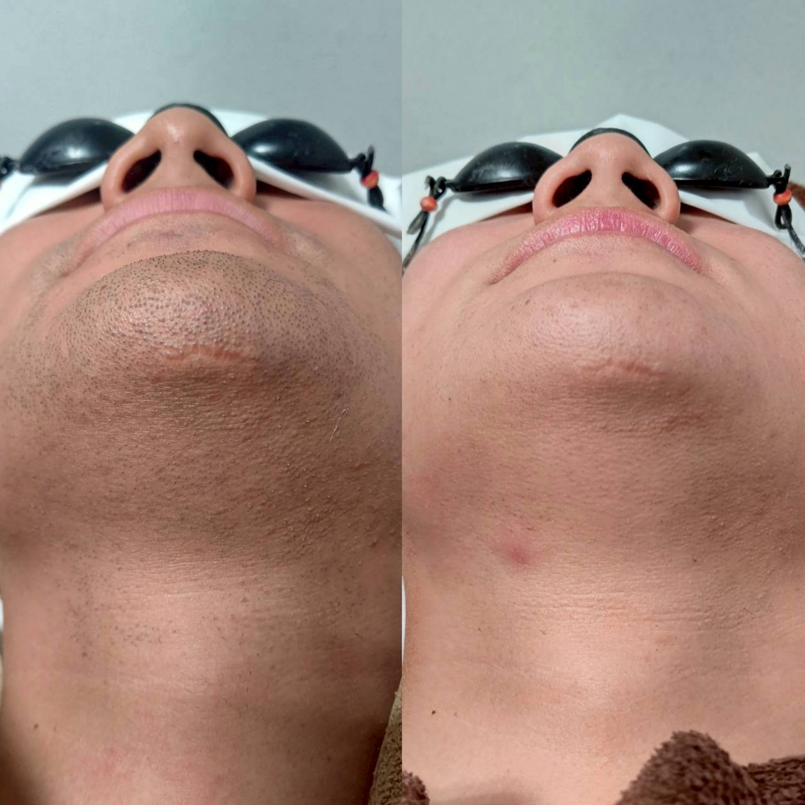

脱毛はいつ「卒業」できる?やめどきの目安

「そろそろ通うのをやめてもいいのか、まだ続けたほうがいいのか分からない」というご相談をいただくことがあります。今回は脱毛の「卒業」タイミングについてお話しします。
脱毛には明確な「完了」の基準があるわけではなく、自己処理の頻度がどれだけ減ったかや、ご自身が満足できる状態になったかどうかで判断していただくことが多いです。毛量が減り、剃る頻度が以前よりぐっと少なくなったと感じる段階で、通うペースを落とす方もいらっしゃいます。
「完全になくなるまで通わないといけない」と思われがちですが、Iryでは都度払いも可能なため、ご自身が納得できるタイミングで一旦区切りをつけていただいても構いません。しばらく経って毛量の変化が気になった際に、また相談にいらっしゃる方もいます。
効果の感じ方や「卒業」のタイミングには個人差があります。「今の状態で通い続けるべきか」と迷った際は、次回の施術時にスタッフへ率直にご相談ください。